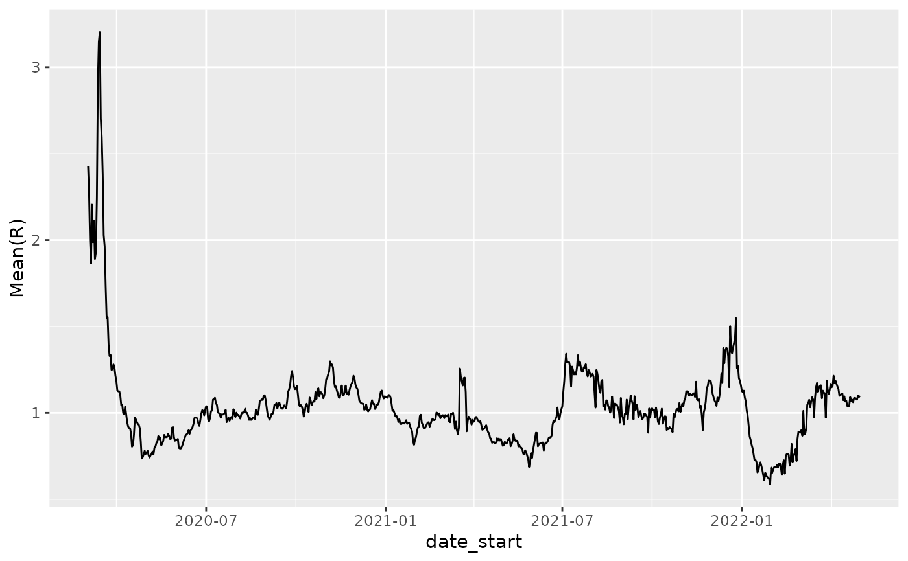
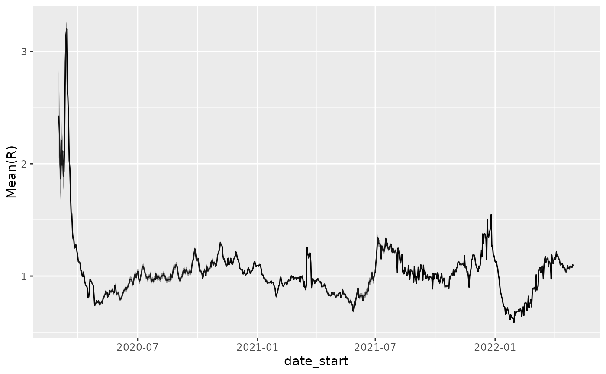

Given a case-tracking dataset, determine the basic reproduction index over time.
estimate_Rt( df, filter_expression, cases_column = "count", date_column = "date", method, config, cumulative = TRUE, estimation_family = "epiestim", invert = FALSE, quiet = TRUE, ... )
Arguments
| df | a data.frame containing at least a date column and a cases column, describing
the cumulative cases at each date. Note that dates MUST NOT REPEAT and the function
will check that this is the case. Use the |
|---|---|
| filter_expression | a |
| cases_column | character(1) name of (cumulative) cases column in the input data.frame |
| date_column | character(1) name of date column in the input data.frame |
| method | character(1) passed to |
| config | list() passed to |
| estimation_family | One of |
| invert | Unused default FALSE, but if TRUE, returns 1/R(t) or related estimate, useful for plotting, since we are often most interested in looking at R(t) near or below 1. |
| quiet | logical(1) whether or not to provide messages, etc. |
| ... | passed to the estimation method |
Value
For the epiestim method, returns a data.frame with columns: - Mean(R) - Std(R) - Quantile.0.025(R) - Quantile.0.05(R) - Quantile.0.25(R) - Median(R) - Quantile.0.75(R) - Quantile.0.95(R) - Quantile.0.975(R)" - date_start - date_end
See also
Other analysis:
bulk_estimate_Rt()
Other case-tracking:
align_to_baseline(),
beoutbreakprepared_data(),
bulk_estimate_Rt(),
combined_us_cases_data(),
covidtracker_data(),
ecdc_data(),
eu_data_cache_data(),
jhu_data(),
nytimes_county_data(),
plot_epicurve(),
usa_facts_data()
Examples
#> # A tibble: 6 x 5 #> date state fips count subset #> <date> <chr> <chr> <dbl> <chr> #> 1 2020-01-21 Washington 00053 1 confirmed #> 2 2020-01-22 Washington 00053 1 confirmed #> 3 2020-01-23 Washington 00053 1 confirmed #> 4 2020-01-24 Illinois 00017 1 confirmed #> 5 2020-01-24 Washington 00053 1 confirmed #> 6 2020-01-25 California 00006 1 confirmednystate_Rt = estimate_Rt( nyt, filter_expression = state=='New York' & subset=='confirmed', estimation_family='epiestim', cumulative=TRUE, method = 'parametric_si', config = list(mean_si=3.96, std_si=4.75)) head(nystate_Rt)#> t_start t_end Mean(R) Std(R) Quantile.0.025(R) Quantile.0.05(R) #> 1 2 8 2.428545 0.2358812 1.988294 2.054010 #> 2 3 9 2.272241 0.1906823 1.913890 1.967954 #> 3 4 10 1.998458 0.1523810 1.710949 1.754590 #> 4 5 11 1.865457 0.1296582 1.619972 1.657433 #> 5 6 12 2.204895 0.1262519 1.964362 2.001419 #> 6 7 13 1.987600 0.1022311 1.792256 1.822487 #> Quantile.0.25(R) Median(R) Quantile.0.75(R) Quantile.0.95(R) #> 1 2.829117 2.420913 2.829117 2.829117 #> 2 2.594716 2.266910 2.594716 2.594716 #> 3 2.255532 1.994586 2.255532 2.255532 #> 4 2.083725 1.862454 2.083725 2.083725 #> 5 2.416589 2.202486 2.416589 2.416589 #> 6 2.158691 1.985847 2.158691 2.158691 #> Quantile.0.975(R) date_start date_end #> 1 2.912167 2020-03-02 2020-03-08 #> 2 2.660890 2020-03-03 2020-03-09 #> 3 2.307967 2020-03-04 2020-03-10 #> 4 2.128007 2020-03-05 2020-03-11 #> 5 2.459119 2020-03-06 2020-03-12 #> 6 2.192902 2020-03-07 2020-03-13# plot 1/Rt to expand region around 1 since that is typically what # is most interesting with respect to controls p = ggplot(nystate_Rt, aes(x=date_start,y=1/`Mean(R)`)) + geom_line() p#># super-cool use of tidyr, purrr, and dplyr to perform # calculations over all states: if (FALSE) { library(dplyr) library(tidyr) est_by = function(df) { estimate_Rt( df, estimation_family='epiestim', cumulative=TRUE, method = 'parametric_si', config = list(mean_si=3.96, std_si=4.75)) } z = nyt %>% dplyr::filter(subset=='confirmed') %>% tidyr::nest(-state) %>% dplyr::mutate(rt_df = purrr::map(data, est_by)) %>% tidyr::unnest(cols=rt_df) p = ggplot(z,aes(x=date_start,y=1/`Mean(R)`, color=state)) + ylim(c(0.5,1.25)) + geom_smooth(se = FALSE) p library(plotly) ggplotly(p) }